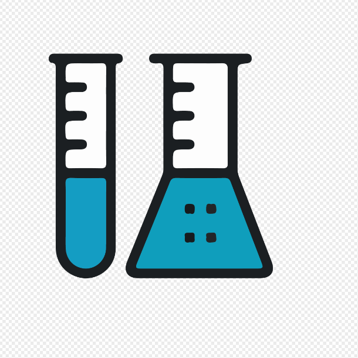

이화여자고등학교
오호만들기 실험
[오호 만들기 실험동기]
해마다 급속도로 플라스틱 생산량이 증가하면서 플라스틱으로 인한 환경오염 문제가 심각해지고 있다. 이 문제의 해결책으로 만들어진 친환경 물병 오호를 직접 만들어 보면서 활용 가능한 정도를 확인하고 한계점과 그 해결방안을 모색해보고자 실험하게 되었다.[오호 실험 배경지식]
hgjg

[오호 실험과정]
*준비물:젖산칼슘, 알긴산 나트륨, 물, 용기, 숟가락1. 물 500ml에 알긴산 나트륨 2g 을 넣어 젓는다.
2.녹은 알긴산 나트륨 용액을 30분 간 방치해둔다.
3.물 500ml에 젖산칼슘 2g을 녹여준다.
4.방치되었던 알긴산 나트륨 용액을 한 숟가락 정도 덜어서 젖산칼슘 용액에 넣어준다.
5.3분 이상 방치해두었다가 꺼낸다.
